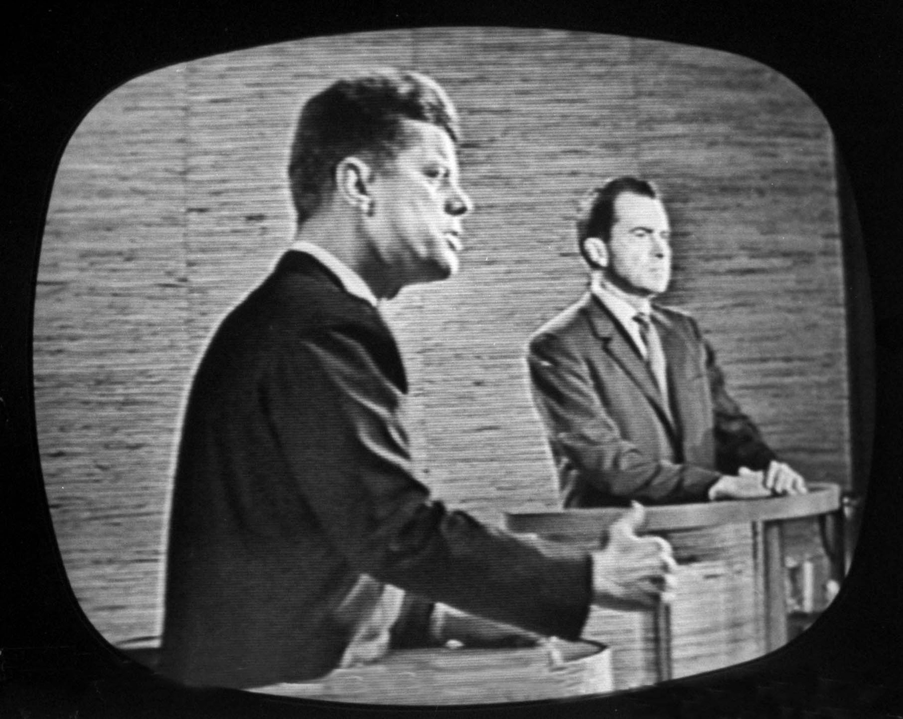

We use all kinds of terms to talk about media. It will be useful to clarify them. It will be especially important to distinguish between mass communication and mass media, and to attempt a working definition of culture. You likely are reading this book as part of a class dedicated to mass communication, so let’s start with mass communication first. Note that adjective: mass. Here is a horrible definition of mass from an online dictionary: Of, relating to, characteristic of, directed at, or attended by a large number of people. But the definition gets the point across. Communication can take place just between two people, or among a few people, or maybe even within one person who is talking to himself. Mass communication is communication of, relating to, characteristic of, directed at, or attended by a large number of people. That’s pretty ugly. Let’s try the following: Mass communicationCommunication transmitted to large segments of the population. refers to communication transmitted to large segments of the population.
How does that happen? The transmission of mass communication happens using one or more of many different kinds of mediaMeans of communication and transmission; as the plural of medium, a means of communication and transmission, media refers to a number of such means, such as print, digital, and electronic media. (people sometimes forget that media is the plural of the singular, medium). A medium is simply an instrument or means of transmission. It can be two tin cans connected by a string. It can be television. It can be the Internet. A mass medium is a means of transmission designed to reach a wide audience. It is not tin cans on a string, unless you have a lot of cans, but it can be television or the Internet. Media are more than one medium. So mass mediaThose means of transmission that are designed to reach a wide audience; some examples are radio, newspapers, magazines, books, and video games, as well as Internet media such as blogs, podcasts, and video sharing. refers to those means of transmission that are designed to reach a wide audience. Mass media are commonly considered to include radio, film, newspapers, magazines, books, and video games, as well as Internet blogs, podcasts, and video sharing.
Lastly, let’s define culture a bit more. All this mass communication over mass media takes place among people in a particular time and place. Those people share ideas about reality and the world and themselves. They act out those ideas daily in their lives, work, and creative expressions, and they do so in ways that are different from other people in other places and other times. We can use culture to refer to the acting out of these shared ideas.
One of the great scholars of culture, anthropologist Clifford Geertz, offered this definition. He said, culture is “an historically transmitted pattern of meanings embodied in symbols, a system of inherited conceptions expressed in symbolic forms by means of which men communicate, perpetuate, and develop their knowledge about and their attitudes toward life” (1973, 89). That’s difficult language, but you can get the idea—culture is historically transmitted knowledge and attitudes toward life expressed in symbolic form. Or perhaps more simply, cultureThe expressed and shared values, attitudes, beliefs, and practices of a social group, organization, or institution. is the expressed and shared values, attitudes, beliefs, and practices of a social group, organization, or institution. It is OK if that still seems broad and fluid. Scholars too wrestle with the term because it must capture so much. Culture should not be easy to define.
What this book will do is bring together media and culture in the context of the American experience. Throughout American history, evolving media technologies have changed the way we relate socially, economically, and politically. Here’s one example from long ago that is still talked about today. In 1960, the first televised presidential debates changed American history forever. The young senator, John F. Kennedy, looked wonderful on television. He appeared energetic, crisp and at ease, while Vice President Richard Nixon looked nervous and uncomfortable. His makeup was caked on. He hunched and slouched. People who listened to the debate on the radio considered it a tie. But most people who watched the debate on television believed that Kennedy crushed Nixon. Kennedy upset Nixon and won the presidency. A few months later, the newly-elected president gave credit to technology for changing public perceptions and enabling his win. He claimed that “it was TV more than anything else that turned the tide.”Louis Menand, “Masters of the Matrix,” The New Yorker, January 5, 2004. Ever since Kennedy, American presidential hopefuls have had to be increasingly television-ready and media savvy. Indeed, evolving technology has helped change what the American public wants out of its leaders.
Figure 1.2
In today’s wired world of smartphones and streaming satellite feeds, our expectations of our leaders, celebrities, teachers, and even ourselves are changing in drastic ways. This book aims to provide you with the context, tools, and theories to understand changes brought about by the commingling of media and culture. Rather than telling you what to think, this book hopes to provide you with a framework to consider some of the crucial issues affecting media and culture in today’s world. The following are some questions to consider now and to keep in mind as you move forward in this book:
Reread the previous questions about media and culture. Write down some of your initial responses or reactions, based on your prior knowledge or intuition. Keep the piece of paper somewhere secure and return to it on the last day of the course. Were your responses on target? How has your understanding of media and culture changed? How might you answer questions differently now?